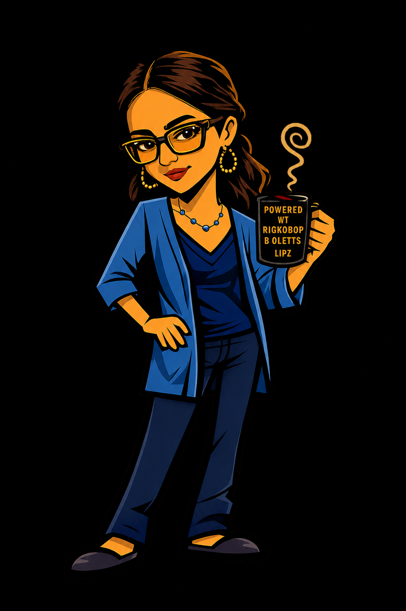
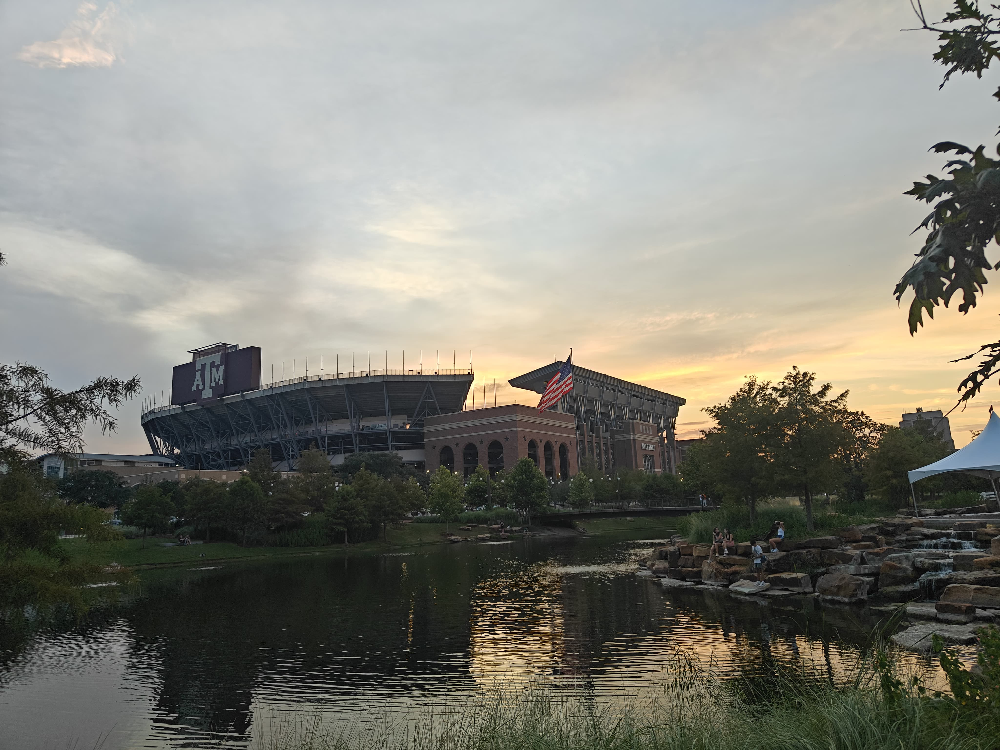
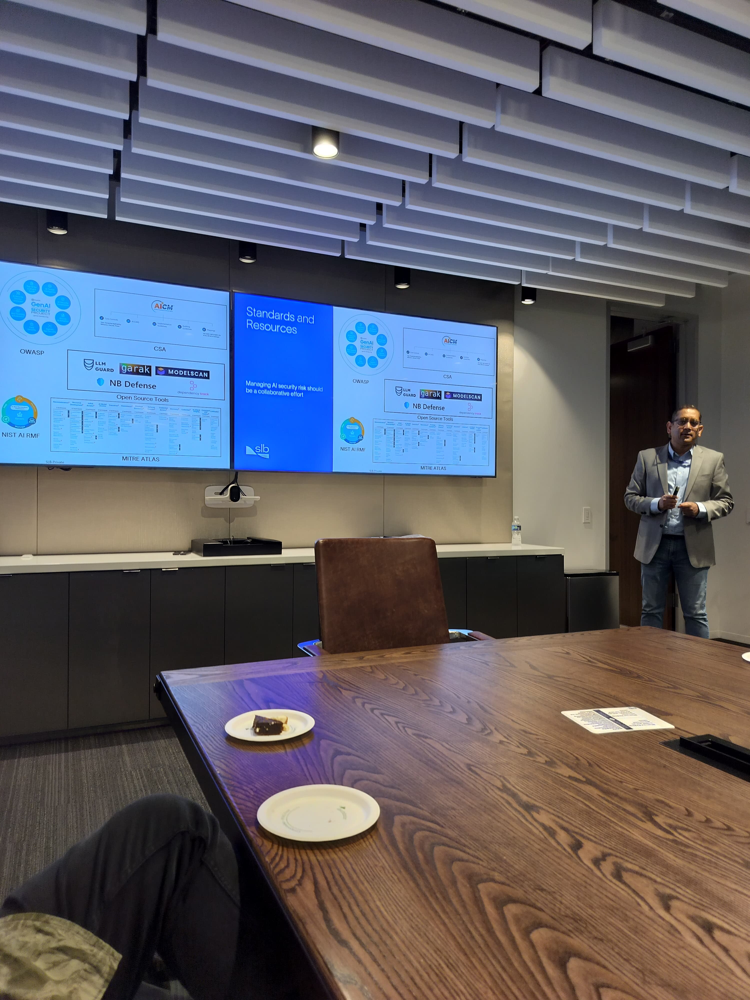
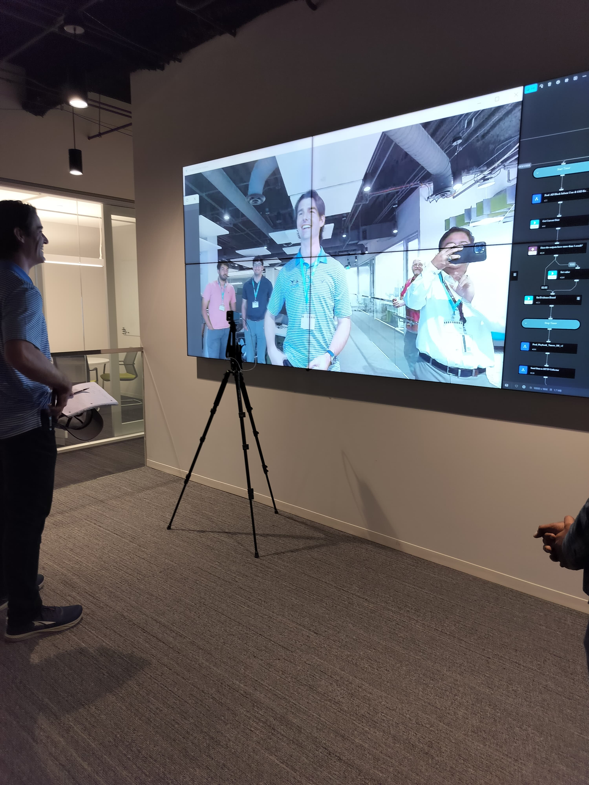
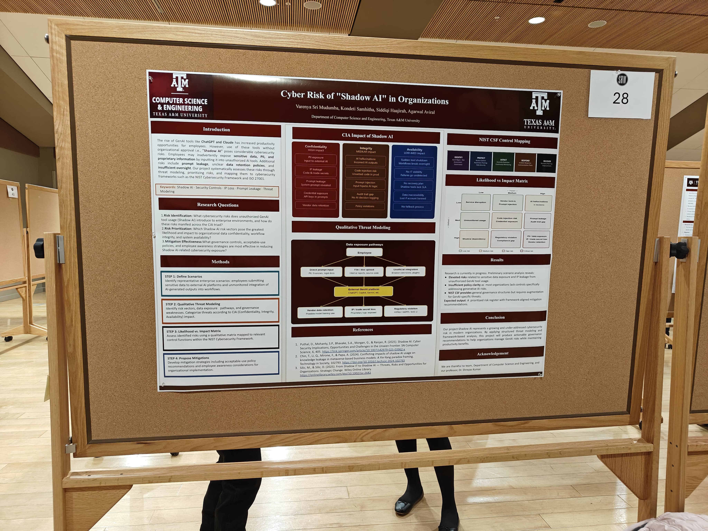
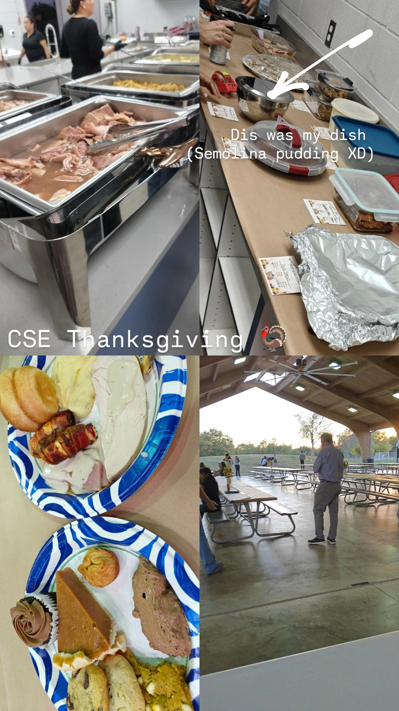

When self-correction backfires — notes from my own study
A short write-up of why prompting an LLM to "check its work" can degrade accuracy, and when self-consistency is the better tool. Click to edit this post.
A Quantum ML & NLP researcher at Texas A&M University.
let focus = ['quantum ML', 'NLP', 'CyberSecurity'], tools = ['PyTorch', 'Qiskit', 'LangChain'], offDuty = ['cooking', 'choir', 'sketching'], skillset = focus.concat(tools, offDuty)
Browse my research, read the blog, or get in touch.

I'm a Master of Science in Computer Science student at Texas A&M University, working where quantum computing, machine learning, and language models meet. My research spans automated conjecture generation for quantum circuits, empirical studies of LLM reasoning, and quantum optimization.
Before TAMU, I built deep learning models for Hardware Trojan detectionat NIT Durgapur, led sponsorships for the ISTE chapter, and represented a cohort of 190+ students. Outside research, I sing with the university choir, cook, and sketch.
Investigating optimal decomposition of controlled unitary gates using automated conjecture tool (TxGraffiti) to surface mathematical relationships between quantum circuit structure and graph invariants. Verified counterexample detection on real circuits.
Building a conversational AI agent that makes single-cell gene expression analysis (SCGEATool) accessible through natural language, lowering the barrier for biologists to run complex bioinformatics workflows using LLM reasoning.
Developed a deep learning model integrating sensor data from 10+ municipal stations, processing 10,000+ daily data points to capture spatial correlations across a city water-distribution network using Graph Neural Networks.
A 96 condition empirical study proving prompting based self-correction is net harmful, while self-consistency outperforms it at equal compute. Built two SFT datasets with DeepSeek R1 step attribution and LoRA fine-tuning +17.82 pts on GSM8K with Mistral-7B.
Demonstrated across 1,000 Monte Carlo trials that Simulated Quantum Gradient Descent outperforms Classical GD by 13+ percentage points in finding the global minimum, isolating gradient estimation quality as the critical factor on non-convex landscapes.
An intelligent graph-based research paper recommender integrating conversational LLM dialogue with a GraphSAGE model over a citation graph. Users refine vague queries through a 5 question clarification flow; the system jointly considers semantic similarity and citation network structure to surface topically aligned papers.
Research and projects across quantum computing, LLM reasoning, and graph machine learning.
Investigating optimal decomposition of controlled unitary gates using TxGraffiti, an automated conjecture tool, to surface mathematical relationships between circuit structure and graph invariants. Exploring connections between graph theory and quantum circuit complexity through automated reasoning, with verified counterexample detection.
Building a conversational AI agent that makes single-cell gene expression analysis accessible through natural language, lowering the barrier for biologists to run complex bioinformatics workflows.
Conducted a 96-condition empirical study proving that prompting-based self-correction is net harmful, while self-consistency outperforms it at equal compute. Built two novel SFT datasets with DeepSeek-R1 step attribution and LoRA fine-tuning, gaining +17.82 pts on GSM8K with Mistral-7B.
Demonstrated across 1,000 Monte Carlo trials that Simulated Quantum Gradient Descent outperforms Classical Gradient Descent by 13+ percentage points in finding the global minimum, isolating gradient-estimation quality as the critical factor on non-convex landscapes.
Developed a deep learning model integrating sensor data from 10+ municipal stations, processing 10,000+ daily data points to capture spatial correlations across a city water-distribution network.
Notes on what's moving in computer science — quantum computing, security, and large language models.
A short write-up of why prompting an LLM to "check its work" can degrade accuracy, and when self-consistency is the better tool. Click to edit this post.
VQE and QAOA on real hardware versus classical simulators — a grad student's read on what's promising and what's hype.
A plain-language tour of the finalized PQC algorithms and why migration is already overdue for long-lived data.
Longer reasoning chains don't always help. New benchmarks suggest a real ceiling — here's what that means for agents.
Why tool-using agents widen the attack surface, and the partial defenses that actually hold up in practice.
How an automated reasoning tool proposes graph-theory conjectures — and how it ties into quantum circuit complexity.
Life around the research — field trips, college moments, and community.

TAMU / college moment
Inauguration day

A field trip



Travel / nature
Served as Sponsorship Head for the Indian Society for Technical Education chapter, securing $4,500 in funding and growing the community to a 4K LinkedIn following.
Acted as the primary liaison between faculty and a cohort of 190+ students across two academic years at NIT Durgapur.
Outside research, I sing with the university choir, experiment in the kitchen, and sketch. For recipes, music moments, and everything off-the-clock, visit my personal space.
Open to research collaborations, internships, and a good conversation about quantum or LLMs.